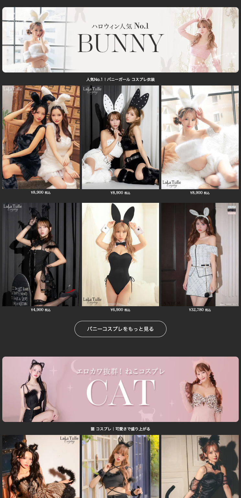
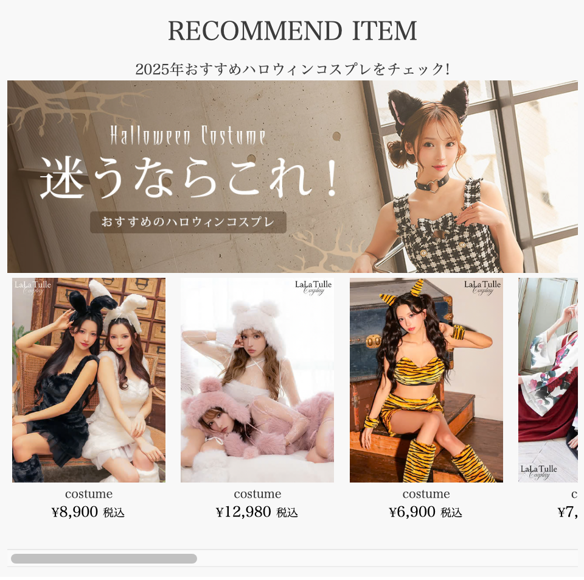

2023.09–2025.08
縦に長い商品一覧
各カテゴリに商品を9点ずつ並べていたため、
下の商品まで何度もスクロールする必要がありました。
01 / 03 E-commerce
LaLaTulle
特集、ホーム、商品ページを見直しました。
行動データを分析し、画面設計から変更後の検証まで担当しました。

デザインを見直して商品一覧へ進みやすくしました。
使用ツール
カテゴリを横スクロールで選べるメニューを設け、
全商品とセールへのリンクを追加しました。


バナーのデザインが古くなっていたため、作り直しました。
BEFORE


AFTER


2023.09–2025.08
各カテゴリに商品を9点ずつ並べていたため、
下の商品まで何度もスクロールする必要がありました。

2025.09–2025.10
各カテゴリの商品を9点から6点に減らし、
次のカテゴリまでのスクロールを短くしました。

2025.11
カテゴリをタブで切り替える方式を採用し、
ページを大幅に短縮しました。

–

ページの最後に人気商品を載せ、
続けて商品を探せるようにしました。


衣装の選び方や着用シーンに関する質問に答え、
schema.orgのFAQPage構造化データも追加しました。
パンくずリストからハロウィンページに戻れないページも含め、対象のすべてのカテゴリページにボタンを追加しました。
ハロウィンページ
集計期間 ／ 2024–2026年の各10月1日〜31日
初回改善後 ／ 10月1日〜31日 ／ 2024年比
商品リスト閲覧数
商品詳細閲覧数
売上
タブ切り替え後 ／ 10月1日〜31日 ／ 2025年比
直帰率
シーズン 10月1日〜31日 ／ 2025年と2024年の比較
初回改善後は商品一覧と詳細の閲覧が増え、
タブ切り替え後の翌年は直帰率が下がりました。
Googleで実際の検索順位を見る
ハロウィンコスプレヘッダーの上段はアイコンで埋まり、余白がほとんどありませんでした。
選択肢が多いと目的の機能を見つけるまでに時間がかかると考え、
上段はよく使う機能だけに絞りました。
買い物に必要な機能と、
ヒートマップでの利用状況から優先順位を決めました。

使用ツール
セールへのアクセスが少なかったため、店長・広告担当者にバナーの入れ替えを提案しました。
相談のうえ、主力ブランドを最上部に置き、セールはその下に小さく表示しました。


Clarityのヒートマップでは、ページ中段の簡単検索にタップが集まっていました。
簡単検索と検索フォームをファーストビューにまとめました。


集計期間 ／ 2026.02.03–09（変更前）・02.10–16（変更後）
100PVあたりの簡単検索タップ数
Microsoft Clarity
ホーム訪問者のミニドレス到達率
Google Analytics
簡単検索の利用とミニドレス一覧への到達率は上昇。
バナー入れ替え前後で、全体の売上とトップページのGoogle検索順位に大きな変化は見られませんでした。
他ブランドよりカート追加率が低く、離脱率が高めでした。
直近24時間の閲覧人数を表示し、購入率を比較しました。
使用ツール
集計期間 ／ 2025.08.08–08.20
Google Analytics ／ 表示ありと対照群の比較
2標本比率のZ検定では、購入率に統計的に有意な差は見られませんでした（p > 0.05）。
購入率の改善は確認できず、
閲覧人数の表示を終了しました。